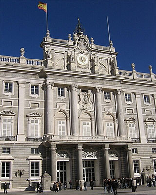
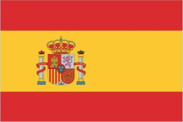

Spain is a country in Europe, famous for its culture, delicious food, and iconic landmarks. It has many wonderful customs, such as flamenco dancing and bullfighting. Having a relaxed and fun way of life as well as a diverse gastronomy and heritage makes Spain a unique travel destination.
People and Society
Population
Spain's population is a total of 47,280,433 people, with 23,069,327 males and 24,211,106 females. The average annual population growth rate is 0.12%. The birth and death rates are 7.1 births/1,000 population and 10 deaths/1,000 population. All data is as of .
Ethnicity & Religion
The following table shows the division of Spain's population based on ethnic groups (data as of ):
Ethnic Group
Percent of Total Population
Spanish
84.8%
Moroccan
1.7%
Romanian
1.2%
Other
12.3%
The following table shows the religion distribution across the country (data as of ):
Religion
Percent of Total Population
Roman Catholic
58.2%
Atheist
16.2%
Agnostic
10.8%
Other
2.7%
Non-Believer
10.5%
Unspecified
1.7%
Languages
Due to the many distinct regions in Spain, there's a variety of languages spoken across the country. The following table shows the region where they are official (except for the nationally official language), as well as the percent of the total population that declared the language as their first.
Language
Percentage
Officiality
Castilian Spanish
74%
Nationally
Catalan
17%
Catalonia, Balearic Islands, Valencian Community
Galician
7%
Galicia
Basque
2%
Basque Country, Navarre
Aranese
Less than 5,000 speakers
Part of Catalonia
The languages Aragonese, Aranese Asturian, Calo, and Valencian are also recognized as regional languages.
Government
Spain's government type is a parliamentary constitutional monarchy.
Capital and Spain's Flag
The country's capital is Madrid, and is the most populous city of Spain. It is a city full of culture and beutiful sights. Its geographic coordinates are 40 24 N, 3 41 W, and its time difference is UTC+1 (6 hours ahead of Miami's time zone - EST). Madrid has many famous landmarks including but not limited to Puerta del Sol (Sun Gate), Palacio de Cristal (Crystal Palace), and the Royal Palace.
The Bear and the Arbutus statue in the Puerta del Sol plazaThe Crystal Palace in Madrid

The south facade of the Royal Palace in Madrid
The flag includes the national colors, red and yellow, and the national coat of arms that displayes the emblems of the traditional kingdoms of Spain (Castille, Leon, Navarre, and Aragon - clockwise from upper left). The pomegranate at the bottom of the shield represents Granada. The arms are framed by two columns representing the Pillars of Hercules - a national symbol.

The flag of Spain
Administrative Divisions
In Spain, there are 17 autonomous communities:
Andalucia
Aragon
Asturias
Canarias
Cantabria
Castilla-La Mancha
Castilla-Leon
Cataluna
Comunidad Valenciana
Extremadura
Galicia
Illes Baleares
La Rioja
Madrid
Murcia
Navarra
Pais Vasco
There are also 2 autonomous cities:
Ceuta
Melilla
Constitution & Citizenship
The country's constitution was last approved by the General Courts on . It was passed by referendum on . It was signed by the king and became effective .
Citizenship in the country has the following limitations:
No citizenship by birth
Citizenship by descent only (at least one parent must be a citizen of Spain)
Dual citizenship is recgonized with select Latin American countries only
The residency requirement for naturalization is 10 years for people with no ties to Spain
Environment
Climate & Current Issues
Spain's climate is temperate, and consists of hot summers and cloudy, cold winters in the interior. Along the coast, the climate consists of more moderate and cloudy summers, and partly cloudy and cool winters.
Current environmental issues in the country include but are not limited to:
Pollution of the Mediterranean Sea from raw sewage and effluents from offshore production of oil & gas, as well as from drought, are negatively impacting water quality/quantity nationwide
Air pollution
Deforestation
Desertification
International Agreements
The following list shows the international agreements that Spain is party to:
Air Pollution
Air Pollution-Heavy Metals
Air Pollution-Multi-effect Protocol
Air Pollution-Nitrogen Oxides
Air Pollution-Persistent Organic Pollutants
Air Pollution-Sulphur 94
Air Pollution-Volatile Organic Compounds
Antarctic-Environmental Protection
Antarctic-Marine Living Resources
Antarctic Treaty
Biodiversity
Climate Change
Climate Change-Kyoto Protocol
Climate Change-Paris Agreement
Comprehensive Nuclear Test Ban
Desertification
Endangered Species
Environmental Modification
Hazardous Wastes
Law of the Sea
Marine Dumping-London Convention
Marine Dumping-London Protocol
Marine Life Conservation
Nuclear Test Ban, Ozone Layer Protection
Ship Pollution
Tropical Timber 2006
Wetlands
Whaling
Land Use
The following table shows the distribution of land use with percentages being of the country's total land area. The data is from .